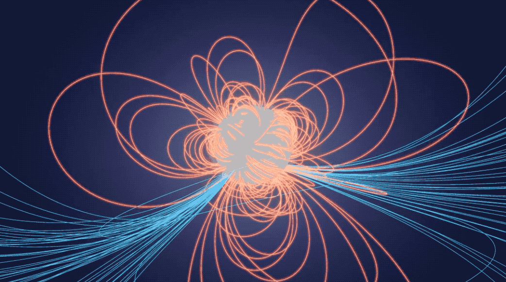

A recent study suggests that a rapidly spinning neutron star with an immensely powerful magnetic field experienced a "glitch" while obliterating a space rock. The neutron star, named SGR 1935+2154, resides about 30,000 light-years away near the center of the Milky Way. During the event, the star exhibited a brief change in its rotational speed, coinciding with the destruction of an asteroid that was pulled in by the star's gravity and torn apart. This glitch also involved the release of a fast radio burst (FRB), a powerful burst of radio waves.
Astronomers, in a new study, have successfully linked these mysterious bursts of radio energy to a specific type of extreme stellar remnant known as magnetars. These magnetars are formed when a massive star depletes its nuclear fusion fuel, leading to a core collapse that results in a stellar remnant with the mass of the sun compressed into a space comparable to the size of an average city on Earth. This collapse generates the most potent magnetic fields in the universe, earning these neutron stars the name "magnetars." The origin of FRBs has been puzzling since their discovery in 2007, but in 2020, astronomers identified two rapid-fire FRBs originating from within the Milky Way and linked them to magnetars. Despite establishing this connection, scientists are still exploring the precise mechanism behind the link between magnetars and FRBs.
@2023 SpaceQuest
Terms and conditions
Privacy